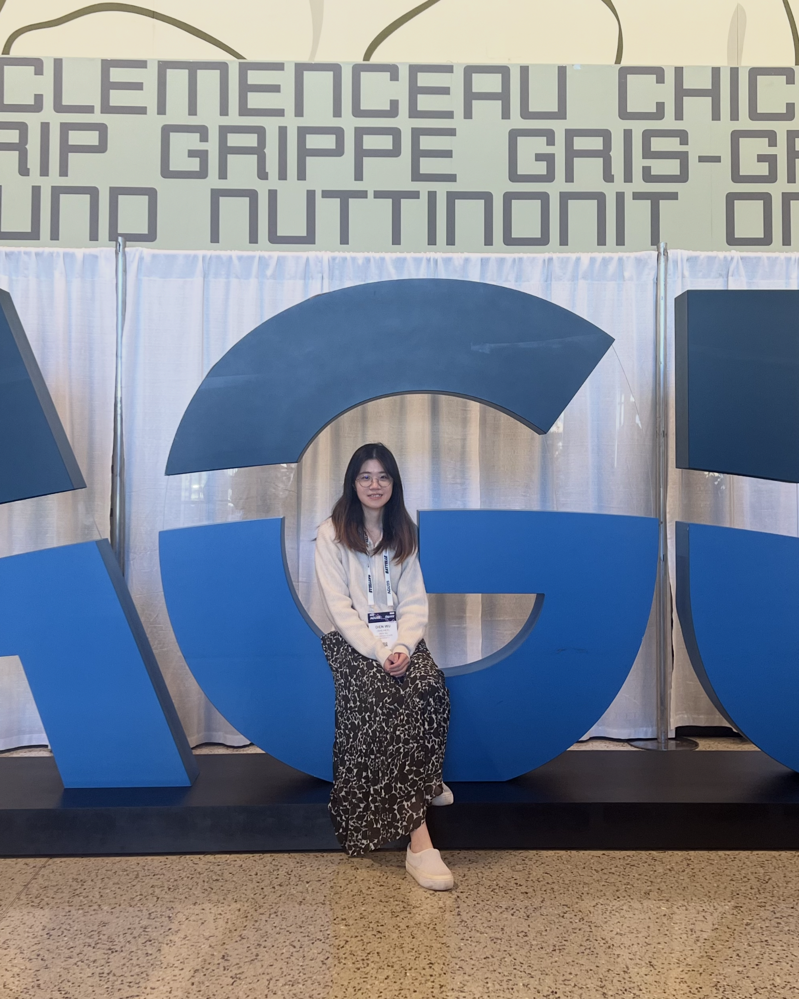
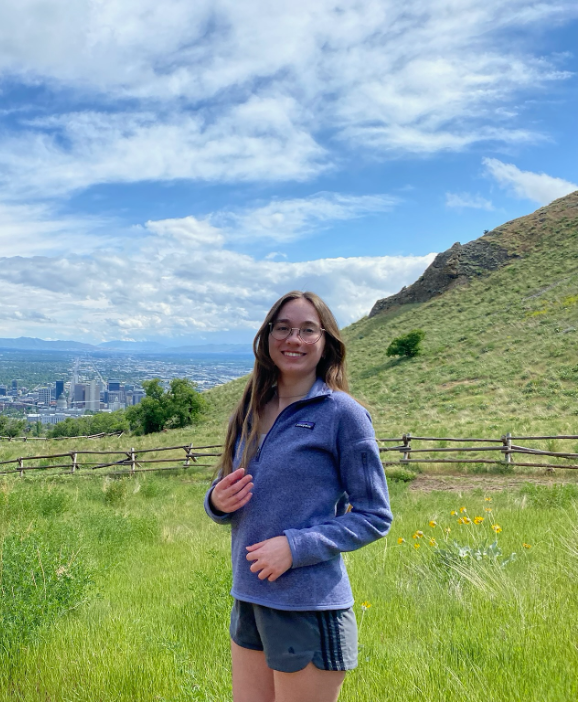
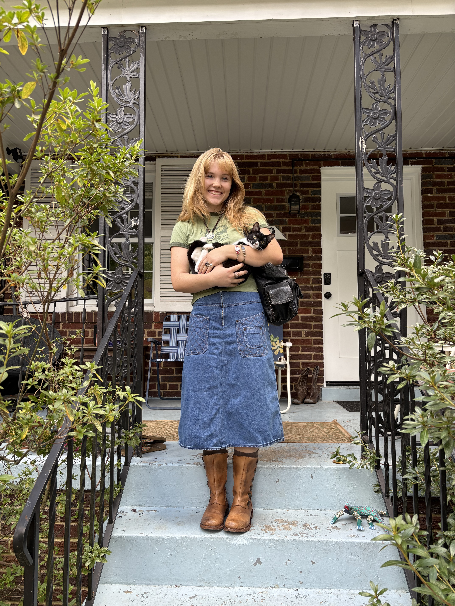

Looking for motivated undergrads and postdoctoral researchers. Please contact Dien via dien.wu at colostate.edu.
PI: Dien Wu, CV
As an atmospheric scientist, Dien has been intrigued by complex land-atmosphere interactions and how they are changing under anthropogenic and climatic forcing. She enjoys developing atmospheric (chemical) transport models, inverse techniques (from a top-down perspective), and empirical/machine-learning models (from a bottom-up perspective) to help interpret varied remotely sensed products of atmospheric compositions and land surface properties. She has been a member of NASA’s Orbiting Carbon Observatory (OCO-2 & OCO-3) Science Teams and the TEMPO DART Team. 🛰️ She loves hiking and playing racquetball. You can likely find her in the woods 🌲 or on Linkedin, GScholar, and GitHub.
{kind=link}
{kind=link}

Graduate Research Assistant (GRA)
Megan Marra (M.S. student, Fall 2025 - )
Megan is working on NASA’s CMS-Fire project in investigating fire-induced turbulence on pollution dispersion (WRF-fire, WRF-LES) and post-fire vegetation recovery using remote sensing observations. She earned her BS in Applied Statistics from the Rochester Institute of Technology (RIT) in New York. While at RIT, she discovered a passion for investigating climate risks, data modeling, and machine learning algorithms. Before enrolling at CSU, she worked as a full-time Technical Information Specialist at the Library of Congress. She further developed her data analysis, technical writing, and general research skills at the Library. Outside work and school, she enjoys long walks, hikes, jogging, and kickboxing. She also loves spending time with her cat, Joan of Arc.

Molly McKellar (M.S. student, Fall 2026 - )
Molly earned her BS in Atmospheric and Oceanic Sciences from UW-Madison in Spring 2026 and participated NASA’s Student Airborne Research Program (SARP) in 2025. Her time at UW-Madison facilitated her interests in climate modeling, climate variability, and mitigating climate-related risks. Additionally, her participation in the honors program and the Wisconet (Wisconsin’s Environmental Mesonet) helped her discover her passion for both interdisciplinary approaches to climate science as well as interacting with local communities. In her free time, Molly enjoys playing viola, experiencing live music, walking in nature, travling, and spending time with her dog, Taz.

Olivia Griffith (M.S. student, Fall 2026 - )
Olivia will be studying NOx emissions from agricultural land for the TEMPO project. While at the Univeristy of Maryland (UMD), she developed a passion for environmental science through coursework, extracurriculars, and volunteer work. In the AOSC department at UMD, she joined a lab building a micronet of weather stations and air quality sensors, while a study abroad experience in the Mekong Delta studying sustainable agriculture further sparked her interest in remote sensing and instrumentation. Through her NOAA Hollings Scholarship and senior thesis, she focused on improving operational forecasts of tropically transitioning cyclones. Outside of school, Olivia enjoys hiking, knitting, sewing, trying new cuisines, and playing with her cat, Beans.

Lab Affiliate (co-advising, undergrad research)
- Jessie Lyons (M.S. student at CSU; Advisor: Dr. Andrew Schuh at CIRA): studying atmospheric transport
- Aiqi Zhang (B.S. from UToronto; Summer research): studying biogenic VOCs
Furry Lab Assistant
Dr. Schemer

As an amateur atmospheric scientist and a professional gymnast, the 8-year-old Dr. Schemer practices “toy bird” chasing and has a keen research interest in “food security”.
Joan of Arc

Joany is an early-rising birdwatcher who enjoys exploring the mechanisms of her automatic feeder in her free time. She hopes to program the device herself to ensure she has an unlimited supply of breakfast.